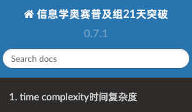

8. greedy algorithm 贪心¶
8.1. 概念¶
A greedy algorithm constructs a solution to the problem by always making a choice that looks the best at the moment. A greedy algorithm never takes back its choices, but directly constructs the final solution. For this reason, greedy algorithms are usually very efficient.
The difficulty in designing greedy algorithms is to find a greedy strategy that always produces an optimal solution to the problem. The locally optimal choices in a greedy algorithm should also be globally optimal. It is often difficult to argue that a greedy algorithm works.
每一步行动总是按某种指标选取最优的操作进行，该指标只看眼前，并不考虑可能造成的影响。可想而知，并不是所有的时候贪心法都能获得最优解，所以一般使用贪心法的时候，都要确保自己能证明其正确性。
8.2. Coin problem硬币问题¶
As a first example, we consider a problem where we are given a set of coins and our task is to form a sum of money n using the coins. The values of the coins are coins={c1,c2,…,ck}, and each coin can be used as many times we want. What is the minimum number of coins needed?
硬币的面值有{1, 2, 5, 10, 20, 50, 100, 200}，如果要取得520元，我们至少需要4枚硬币。200+200+100+20 = 520
然而，贪心并不一直都是最佳方案。比如硬币的面值有{1, 3, 4}，如果需要取得6元，使用贪心的思路，每一次取最大的，取的方案是{4, 1, 1}，三枚硬币。然而，我们知道最佳方案是{3, 3}，只需要两枚硬币。（这时，我们就会遇见动态规划）
8.3. Scheduling时间安排问题¶
Given n events with their starting and ending times, find a schedule that includes as many events as possible.
event starting time ending time
A 1 3
B 2 5
C 3 9
D 6 8


8.4. 常见题型：¶
按某种顺序排序后，然后逐个取(sort，多关键字排序，重载小于符号)
每次取集合中的最大/最小，更新答案（使用priority_queue
）
贪心在最优子结构的问题中尤为有效（最优子结构的意思是问题能够分解成子问题来解决，子问题的最优解能递推到最终问题的最优解。）
贪心与dp的区别，贪心对每个子问题的解决方案都做出选择，不能回退。dp会保存以前的运算结果，并根据以前的结果进行选择，有回退功能。有的时候，贪心并不是正确的，比如01背包问题。贪心问题特别像逻辑题，方法很简单，但是证明却很难。考场上，不需要会证明。
贪心法证明的常见方法
反证法(假设、调整、做差)
A>=B, A <= B, 证明A=B
数学归纳法
8.5. 《一本通》题目¶
8.5.1. 【例6.1】排队接水¶
排序类型
8.5.2. 【例6.2】均分纸牌(Noip2002)¶
按题意for一遍
8.5.3. 【例6.3】删数问题(Noip1994)¶
贪心：干掉下降子序列第一个数字。或者模拟取找
8.5.4. 【例6.4】拦截导弹问题(Noip1999)¶
LIS，下降子序列个数 和 最长上升子序列长度 对偶
8.5.5. 【例6.5】活动选择¶
排序类型，数轴上的问题
8.5.6. 【例6.6】整数区间¶
排序类型，数轴上的问题，会用到双指针方法
8.5.7. An Easy Problem¶
暴力枚举，学习使用位运算
8.5.11. Ride to Office¶
poj题目，题干描述有bug，误以为从0时出发。不如去看英文版
8.5.16. Crossing River¶
小学奥数类型，对过河问题学习了一手
8.6. 其他题目¶
8.6.1. [NOIP2004 普及组] 火星人¶
/
8.6.2. [NOIP2007 普及组] 纪念品分组¶
/
8.6.3. [NOIP2008 普及组] 排座椅¶
/
8.6.4. P2672 [NOIP2015 普及组] 推销员¶
/
P1090 [NOIP2004 提高组] 合并果子 / [USACO06NOV] Fence Repair G
/哈夫曼编码问题，priority_queue<int>